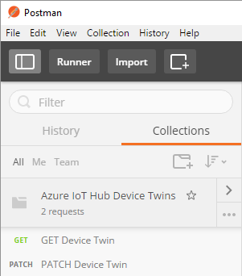

This post describes how to use Postman and Newman to demonstrate your APIs to your users. Of course, you are going to want to use Apiary to officially describe your APIs, but if you really want to demonstrate exact calls and provide guidance on how to use the APIs in a personal manner, it doesn’t get any better than sending over a Postman Collection file and asking them to run that inside of Postman or Newman. Within the file they are able to see the exact URIs, parameters, headers that you use to accomplish their scenario. They can then take that guidance and convert it to whatever technology best suits their application needs.
I’m working with a customer that needs to use the Azure IoT Hub REST APIs to work with Device Twins (a cloud representation of your IoT device). You can read more about Device Twins here and see the official REST API docs here.
A few days ago I forwarded the documentation over to the customer and they struggled with trying to figure out how to use the APIs. There’s a lot missing from the docs and it is mostly generated from comments. My recommendation back to the Azure IoT team is going to be to use Apiary and provide very clear and concise code samples for common scenarios. Many customers have to use the REST APIs because of the memory constrained devices and they want complete control over the interation with IoT Hub - REST APIs should be treated as first class citizens and Postman/Newman/Apiary help do so.
Given that I needed to resolve this customer issue right away, I could not take the time to update the documentation, but wanted to get them the help they needed ASAP. This is the perfect use case for Postman/Newman. So, I jumped into Postman, created a new collection, wrote a pre-request script to generate a SAS token and then demonstrated how to use the APIs. I then used Newman to script the test runs from the command line.
This post will bring you through how I did that. We will go through how to GET a Device Twin document as well as PATCH it to include a desired property.
Get Postman
- Download Postman from http://getpostman.com (I’m using Windows, but feel free to use whatever version works for you.)
Create a New Postman Collection
Postman allows you to organize your REST API calls into collections and then share those collections.
I created a collection called “Azure IoT Hub Device Twins”

Setup Postman Environment
Postman allows you to setup environments that allow you to set and get global variables. This is where we are going to set the variables we need for these calls.
- Click on the eye icon in the upper right.


There you will see that you can configure the variables you need for your script. In the Device Twin case, you need to set the following:
- hubName - The name of your IoT Hub from the Azure portal.
- deviceId - The name of your device
- signingKey - The iothubowner key form the Azure Portal
- expiresInMins - The number of minutes you want to use the token for
- policyName - The access policy to use - set to iothubowner for Device Twin scenario
- deviceName - The second step of this script PATCHES the device twin metadata, it will use this name. Enter anything you want.
Add Pre-request Script to Generate SAS Token
Azure IoT Hub requires you to supply an Authorization header when you call the REST endpoints. You can read more about the requirements for that token on the IoT Hub Security Guide.
The Authorization header has the following format:
SharedAccessSignature sr=jongiothub.azure-devices.net&sig=ZiyjB%2FWuGrG43%2BkfuE07w3iC6em8eluH918%2Bi1F46Uo%3D&se=1486605666&skn=iothubowner
The parameters are:
- sr - The resource uri
- sig - The URI encoded base64 encoded signature
- se - The TTL for the token
- skn - The policy name
We are going to use the Postman Pre-request Script feature to generate the token.
You’ll notice that that under the URI, there’s a Pre-request script tab.

- Click that tab and enter the following code to generate the SAS token and put it in a Postman global variable. You can read the comments to try to decipher how each component is generated.
Add API Calls
The Postman main development area allows you to enter URIs, parameters, headers, Pre-request scripts and Tests.
For the first example we are going to start with the “GET Device Twin” call, which just gets the device twin (cloud representation of the device metadata).

The URI to get the device twin is in the following format:
https://{%raw%}{{hubName}}{%endraw%}.azure-devices.net/twins/{%raw%}{{deviceId}}{%endraw%}?api-version=2016-11-14
Notice that Postman uses a double-curly syntax for variables.
With every Azure IoT Hub API call you need to include the api-version and Authorization header. You can read more about IoT Hub security here. The api-version is pretty straight forward and you can get the most recent version that you should use from the Common parameters and headers page. The Authorization header is a Shared Access Signature that follows very strict, but not very well documented requirements. You can read more about that above.
Add GET Device Twin Call
1. Enter the URI, in this case: https://{{hubName}}.azure-devices.net/twins/{{deviceId}}?api-version=2016-11-14
2. Add ‘Authorization’ header and set the value to {{token}} - that tells Postman to read that value from the global variables you just set in your Pre-request script.
3. Click on the “Tests” tab and enter the following:
tests["Body matches string"] = responseBody.has(postman.getGlobalVariable("deviceId"));

This test will pass if it finds the deviceId that is stored in the global variable.
3. Click Send and view the output. It will look something like this:

And you will see that the tests pass:

Add PATCH Device Twin Call
1. Create a new call by clicking the + sign tab. You can also duplicate the GET call, but remove the Pre-request script if you do that.

2. The URI is the same as the GET call
https://{{hubName}}.azure-devices.net/twins/{{deviceId}}?api-version=2016-11-14
3. Select “PATCH” verb.

4. Set the Authorization and Content-Type headers
5. Set the body to the following:
6. Create the following test:
tests["Body matches string"] = responseBody.has(postman.getGlobalVariable("deviceName"));
7. Click send and you should now see the deviceName property in the JSON result.

And your Test should pass:

Run the Tests in Postman Collection Runner
Postman includes an app that allows you to run all the tests in a collection at once.
1. Click on the toggle arrow next to the collection name and click Run

2. That will bring up the Collection Runner, Click Start Run after selecting your Collection

3. Your tests will run and you’ll see pass/fail for all of them.

Run the Tests in Newman
Newman is Postman’s Node.js serverside Collection execution engine. It takes in a Collection definition a reference to the global variables and then executes the job.
1. Install Newman
npm i -g newman
2. Download the Postman Collection File
Expand the Collection Toggle, click the … button, then Click Export and save that file to your machine.

3. Download the Global Variables File. Go back to your Environments, click Edit, then click the “Download as JSON” button.

4. Open CMD and run the following:
newman run "Azure IoT Hub Device Twins.postman_collection.json" -g globals.postman_globals.json
Change the file names to match the file names you downloaded earlier.
You will then see the following output showing that the tests have passed.

I hope this posts helps you get started with Postman/Newman as well as the Azure IoT Hub Device Twin REST APIs.
Jon